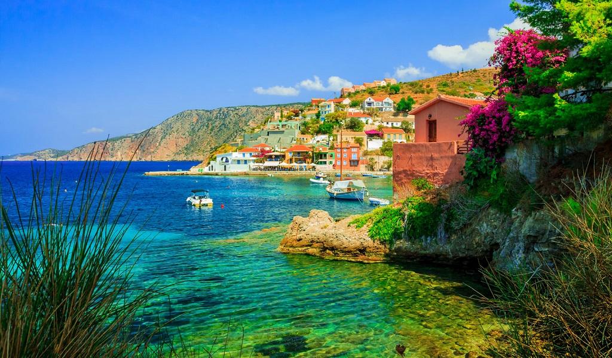

20+1 Best Greek Islands
Lord Byron was on to something when he waxed lyrical about the Greek islands. But with more than 5.000 to choose from, of which only 227 are inhabited, which ones are the very best Greek islands? Here we reveal the ones to get in a speedboat for!
Spreading in two main seas, the Aegean and the Ionian Sea, the Greek islands are divided into smaller groups. This section will give you information for 21 islands in Greece. The most popular island group in Greece is certainly the Cyclades islands: Santorini island, Serifos, Andros, Mykonos island, Amorgos, Naxos, Tinos, Folegandros, Milos, Syros and Sifnos are famous islands all over the world, while the rest of Cyclades keep lower profile in tourism development. The Cycladic architecture is world famous and the culture of the population is very rich. The islands of Dodecanese and Ionian are also very popular. Travel to Astypalea, Corfu island, Rhodes island, Zakynthos/Zante, Kos and Kefalonia also get very popular, while Ithaca, Symi, Patmos and Skiathos are islands that are becoming more and more famous every year. Make sure you will not miss the opportunity to visit the infamous Crete island or the Saronic Gulf's great little gems like Hydra either! The good thing is that despite tourist development, the Greek islands do not lose their original character and provide wonderful atmosphere for true relaxation. Have in mind that many times, an island and its main village has the same name. Also in Cyclades islands, most capital towns are called Chora.
Amorgos
The best Greek Island for: Deep-blue seas and wide-open spaces
It’s not easy to get to Amorgos. In high winds, the fast ferries stay grounded and the slow boat takes upwards of eight hours from Athens. When you disembark at Katapola, a sleepy harbour lined with great little fish tavernas (our favourites are Prekas and To Mouragio), a sign announces: 'Welcome to Amorgos. Nobody will find you here.'

That’s just the point. This craggy Cycladic island has always attracted loners, hikers, divers and pilgrims, who shuffle up the cliff face to the Monastery of Hozoviotissa, a sliver of white dangling 300 metres above the sea. The water here is a million shades of blue and so startlingly clear you can see every sea urchin lurking on the rocky shore. Even the sage-scented hiking trails are called Blue Paths, because the sea and sky are visible in all directions.
With a population of under 2,000, the locals are outnumbered by shaggy goats that blend in perfectly with the burnished landscape and hippie vibe. But you don't have to be a recluse to fall for Amorgos. There are plenty of all-day, late-night bars where Amorgos groupies meet, summer after summer: Jazzmin, in Chora, for backgammon and cocktails; Pergalidi in Langada for herbal infusions and jazzy tunes; Seladi in Tholaria, with giddying views and a telescope for stargazing.
Milos
The best Greek Island for: A photogenic and dramatic coastline
Everyone knows the Venus de Milo (which has stood in the Louvre since the 19th century). Until recently, very few had heard of Milos, the volcanic island where Aphrodite’s graceful likeness was discovered. Those in the know jealously guard their treasured island, and especially its 70 (or more) beaches — surely the most diverse and dramatic coastline of all the Greek Islands.

Little by little, though, Milos is being discovered. Instagram is saturated with no-filter shots of the undulating cliffs at Sarakiniko, the bottle-green swimming hole at Papafragas, and colourful, rickety syrmata, tiny boat houses wedged between rock and sea. (You’ll find the best photo opportunities at Klima and Mandrakia). This painterly landscape was shaped by the minerals that have long been a source of wealth – obsidian, alum, barite and sulphur, which still bubbles up in the island’s many hot springs. As the 11,000-year-old mining industry is gradually giving way to tourism, several chic hotels have made an appearance. Go now, before the trickle of visitors turns into a tide.
Milos's colours and wealth and the shaping of its history derive from its having been flung out of the sea by volcanoes that blew around two million years ago, the principal crater forming one of the largest harbours in the Aegean at Adamas ('diamond' in Greek).
Folegandros
The best Greek Island for: Authenticity with a bohemian buzz
The village square should be your first port of call on any Greek island: settle into your favourite café, pick up local gossip, and adjust to the languid pace of life. On Folegandros, this presents a challenge: the cliff-hanger capital, Chora, has not one but three squares, each brimming with a jumble of cafés, tavernas and dinky raki bars. We recommend Pounta (pounta.gr), where the Danish owner makes (and sells) the lopsided cups and bowls in which your coffee and Greek yogurt are served. From Chora, zigzagging steps lead up, up and away to the only real landmark, Panagia church; make the pilgrimage at sunrise (perhaps after an all-nighter at dimunitive Astarti bar).

Folegandros – which means ‘iron hard’ in ancient Greek – is as barren as its name suggests. Fruit trees are protected from fierce winds by rings of stones. You won’t find sandy beaches lined with sunbeds; only limpid, pebbly coves, such as Katergo, Ambeli and Livadaki. Water taxis service some beaches in high season; otherwise you’ll have to scramble down rocky footpaths to cool off. On your way home, stop at Synantisi in Ano Meria for the island speciality of matsata (goat or rabbit stew with hand-made pasta).
Folegandros, named after the son of King Minos, was once thought of as so isolated that political prisoners were exiled there until the last century. However its beauty and charm are such that many of those sent there chose to settle permanently.
Syros
The best Greek Island for: Culture and off-season cachet
On Syros, capital of the Cyclades, you won’t find sugar-cube villages and whitewashed lanes. The colourful 19th-century city of Ermoupoli is built on twin peaks – one Orthodox, the other Catholic, the heritage of a long Venetian occupation. There’s still a strong Italian flavour in Ermoupoli’s marble piazzas, princely mansions, and miniature replica of La Scala, the showpiece of a year-round cultural scene. Syros hosts festivals of animation, dance, digital art, film, classical music, jazz and rembetiko, the Greek blues popularised by local musician Markos Vamvakaris. A few rembetiko joints have survived in the upper town, Ano Syra.

Once Greece’s ship-building centre, Syros still has a boatyard at Neorio. But the most splendid legacy of the shipping industry are the manor houses in Vaporia and Poseidonia. The beaches are slightly less splendid — with the exception of Delfini, Varvarousa, and Aetos in the wild north. But fabulous seaside tavernas abound: Ambela (ambela.gr) for fresh fish; Iliovassilema (chefbougiouris.gr) on Galissas beach for samphire and sea-urchin salad and rockfish soup; Allou Yallou (allouyialousyros.gr) for lobster with ouzo.
Perhaps the prettiest restaurant of all is Mazi (mazi-syros.com), a vine-covered courtyard festooned with bougainvillaea. Before you leave, stock up on loukoumi (rose-tinted Turkish delight) and San Michalis cheese from Prekas delicatessen (prekasyros.gr), and visit Zylo (zyloeyewear.com) for hand-made wooden sunglasses.
Ithaca
The best Greek Island for: A mythical retreat for families
Despite its legendary stature, the homeland of Homer's hero, Odysseus, remains surprisingly under-the-radar. Ithaca’s turquoise and emerald coves are popular with the sailing set, but few visitors venture into the forested hills. So, you might be the only person exploring dramatic hiking trails, like the heady trek to the church of Anogi, covered in 16th-century frescoes (ask for the key at the village coffee shop), or the 8th-century BC ruins of Odysseus’ palace. Do stop at Yefuri (facebook.com/Yefuri) on the way down, for thin pizza, fat chips, and its famous lemon tart.

Yachts moor in the deep, sheltered harbour of Vathy, or Kioni, a miniature port where you’ll find Spavento, the perfect pier-side café-bar. Go any time of day or night for ice-cream sundaes, excellent cocktails, and a soundtrack to make your heart sing. Ideal for low-key family holidays or retreats, rugged little Ithaca is somewhere you can still disappear.
Cut almost in two by the huge gulf that shields Vathy, its main town, Ithaki effectively consists of two separate islands linked by a narrow isthmus. Vathy is the only significant settlement in the south, while the mighty northern massif holds delightful villages such as Stavros and Anogi, and is peppered with little coves holding pocket-sized resorts such as Frikes and Kioni.
Serifos
The best Greek Island for: Naturists and purists
The sleeper hit of the Cyclades, Serifos is the summer retreat of interior designers and architects who prefer to keep the sandy beaches to themselves. (One French home-owner is so protective of her hideaway that she tells all her friends she summers on nearby Sifnos.) Even in August, you’ll find coves where you can skinny dip in blissful solitude. That’s because the best beaches (Kalo Ambeli, Vagia, Skala) are only accessible via bone-rattling dirt roads or donkey tracks. Better still, rent a motor boat from the laidback harbour, Livada. Make sure to moor outside Anna’s taverna on Sikamia beach for freshly caught fish and garden-grown salads.

In the cascading hilltop Chora, there’s barely any nightlife, no smart boutiques or fancy hotels. But who cares when you can kick back with fennel pie and raki at Stratos, pick up Natassa Kalogeropoulou’s minimalist ceramics at Kerameio, and listen to Greek folk in the open-air amphitheatre. And all less than three hours from Athens.
In Greek mythology, Serifos is where Perseus grew up, bringing back the Medusa's head to save his mother from the unwanted romantic attentions of Polydectes, and where the Cyclopes were said to live. There’s some fine walking on Serifos, and plenty to explore below the waves too.
An ideal place for taking a stroll or making a stop by the nearby cafés, fish tavernas and pastry shops located next to the seashore is the Serifos main Port, also know as Livadi. This area has a beautiful sandy beach but is also very close to Avlomonas and Livadakia beaches
Hydra
The best Greek Island for: A long weekend with the art crowd
You know when Dakis Joannou, Greece's foremost art collector, is on Hydra. His yacht, Guilty, is painted in gaudy 'camouflage' by Jeff Koons. Every summer, Joannou invites big hitters such as Matthew Barney and David Shrigley to create site-specific installations in the Greek island's old slaughterhouse.

Even the school is commandeered for exhibitions in the summer holidays. Car-free and protected by a preservation order, Hydra has always been the artists' muse of the Greek Islands. Leonard Cohen set the scene in the 60s; now Brice Marden, Sadie Coles and Juergen Teller have homes here. Athenian artists take up residence at the School of Fine Arts, one of the vast, grey, stone mansions overlooking the horseshoe harbour.
Less than two hours from Athens, Hydra fills up with chic Greeks at weekends. . They come to disconnect and slow down, but also to see and be seen. Wily cats and weary donkeys patrol the back alleys, but all the action happens along the waterfront. Oh look! There's Olivia Palermo at The Pirate Bar and Chloë Sevigny shaking her tail feather at Hydronetta beach bar. Who cares if there are barely any beaches? You can always find a slab of sun-baked rock from which to leap rock from which to dive into the clearest water in the world.
Hydra is truly the gem of the Saronic Gulf and stands alone among Greek islands as the one free of wheeled vehicles. No cars. No scooters. Just tiny marble-cobbled lanes, donkeys, rocks and sea. In addition to the island’s exquisitely preserved stone architecture, criss-crossing rural paths and clear, deep waters, you can find a good cappuccino along the harbour, which is great for people-watching.
Corfu
The best Greek Island for: Character and lush landscapes
Corfu is the It Girl of the Ionian islands. The cosmopolitan capital is a charming clash of Venetian, British and French colonial influences. Evenings kick off with cocktails on the Liston (a colonnade modelled on Paris's rue de Rivoli), followed by dinner at Corfu Sailing Club, overlooking a floodlit fortress.

With its pastel villages, rolling olive groves and grand manor houses, the rest of the island recalls Tuscany - but with far better beaches. The smart set stay on Corfu's north-east coast (nicknamed Kensington-on-Sea) where the Rothschilds like to unwind. It's wall-to-wall Sloanes and speedboats at Agni, a tiny fishing village with three rival tavernas (Toula's is the best). From here, you can rent a boat and putter to your own cove: perhaps Nissaki, Agios Stefanos or Kerasia. These idyllic bays still resemble the 'delectable landscape' that Lawrence Durrell fell for in the 1930s — now back in vogue thanks to the ITV series, The Durrells. Or venture inland to Ambelonas, an enchanting winery, restaurant and cooking school that specialises in Corfiot dishes, such as squid with chickpea and turmeric mousse and rose petal jelly. Steer clear of the south, especially Kavos. Unless you happen to like wet T-shirt contests.
UNESCO has declared the island’s historic centre a world heritage site. The stately buildings with neoclassical influences will dazzle you. Who could not be moved by the Palace of St Michael and St Georgiou, the Liston Arcade, the Reading Society, the Catholic cathedral, the Maitland rotunda, the Ionian Parliament and the Kapodistrias family mansion. In the famous alleyways of Campiello, with washing lines hanging above you, and in the opulent hotels with their VIP guests, you will feel like a star in a period movie.
The trademark of Corfu island are actually other islands! They are the diminutive Pontikonisi, which translates as Mouse Island, just large enough to hold the Pantokrator monastery, and right next to it, the famous islet Vlacherna, with its 17th century monastery dedicated to the Virgin Mary, connected to the mainland by a narrow causeway. Mass is held here on Easter Monday.
Mykonos
The best Greek Island for: Decadent parties and five-star hotels
Once among the poorest, barest Greek islands, Mýkonos - starting in the late 1950s - became a bohemian mecca and is now one of the glitziest, most renowned tourist destinations in the country. This central Cyclade was briefly the premier Mediterranean resort for gay travellers, though since then Mykonos has tried to reinvent itself for a more varied clientele.

Nightlife is still very gay-friendly, loud and long, such that few venture out onto a dozen sheltered south-coast beaches much before noon. There’s also no shortage of clothing and jewellery boutiques in the main town (Hóra) for a spot of retail therapy. It is, however, strongly suggested that you vacate Hóra itself between 10am and 5pm – when one cruise ship is in port, let alone two or three, the streets essentially become impassable.
Whether you’re looking for a tiny, secluded cove lapped at by cerulean waters, or a wide stretch of sugar-white sand covered with sunworshippers, Mykonos has a beach to suit your needs. The island boasts 25 beaches, to be precise, and they’re justifiably its biggest natural attraction. Partygoers, look no further than Paradise or Super Paradise, dominated by eponymous clubs; Paraga and Psarou are other favourites for beach parties. Elia is Mykonos’ longest sweep of white sand, popular with families, while Platys Gialos and Kalafatis are particularly good for water sports.
Kefalonia
The best Greek Island for: Laidback family holidays
In the Ionian Sea, between other exotic islands, stands grand Kefalonia. Much photographed, much talked about, much loved, by Greeks and foreigners alike. Not just because of Captain Corelli’s Mandolin, the 2001 film that attracted so much attention, but also because of its sheer beauty, its stately towns and many other impressive attractions.

Argostoli, Lixouri, Fiskardo, Assos, Lake Melissani... here the names alone are something to conjure with! This, the largest of the Ionian islands, with its sparkling azure waters, dazzling beaches and deep emerald green mountains, has been a popular holiday spot for decades. The inhabitants of Kefalonia have a reputation for being the wittiest Greeks – always ready with a joke, a smile and a helping hand. Their laid-back attitude toward life is infectious and within hours of your arrival, you’ll feel as carefree as they do.
Kefalonia is the perfect island to explore by boat, with endless private beaches and bays of exceptional beauty, such as Myrto and Makri Gialos. Visit coves that embrace the rare beauty of all the thing to do in Kefalonia, perfectly encapsulate the aesthetic of this Ionian idyll. For lovers of action and activities, Kefalonia offers all sorts of water sports at all the large organised beaches, as well as sea kayaking and scuba diving in impressive locations full of surprises such as little caves teeming with underwater life.
Santorini
The best Greek Island for: Honeymooners and first-timers
Cousteau looked for the lost city of Atlantis here. Crescent-shaped Santorini (or Thíra), the precious gem of the Aegean, is actually a group of islands consisting of Thíra, Thirassiá, Asproníssi, Palea and Nea Kaméni in the southernmost part of Cyclades.

Did you know that the whole complex of Santorini islands is still an active volcano (the same as Méthana, Mílos and Nísiros) and probably the only volcano in the world whose crater is in the sea? The islands that form Santorini came into existence as a result of intensive volcanic activity; twelve huge eruptions occurred, one every 20,000 years approximately, and each violent eruption caused the collapse of the volcano’s central part creating a large crater (caldera). The volcano, however, managed to recreate itself over and over again.
Santorini is considered to be the most sought after place for a romantic getaway in Greece, since there are not many places in the world where you can enjoy exquisitely clear waters while perched on the rim of a massive active volcano in the middle of the sea! The island has a growing reputation as a “wedding destination” for couples not only from Greece but from all over the world. A trip to Santorini with the other half is a dream for anyone who has seen at least one photo of the island’s famous Caldera and exchanging kisses beneath Santorini’s famous sunset is the ultimate romantic experience!
Zakynthos / Zante
The best Greek Island for: Seaside holidays with toddlers or teens
The Venetians called this southernmost Ionian island Fiore di Levante, the Flower of the East. Its nobility and fertility made it the jewel of their empire. Today’s visitors would agree, though they come for its endless beaches – Lagana, Tsilivi, Argassi, Kalamaki, Alykes – where British, French and Italians party day and night.

Looking for indelible moments? You’ll find them when you swim at the famous Shipwreck Beach, watch the sunset from the cliffs of Keri and Kryoneri, listen to the islanders sing their cantatas and see the endangered caretta caretta sea turtles lay their eggs in the island’s white sands. Welcome to Zakynthos, as it is known in Greece, the island that has it all.
Zante is not only beaches. Take a stroll through lovely Bokhali, 2km from the centre of town, and you’ll find yourself stopping every few minutes to admire the panoramic view of the harbour, Argassi and the Bay of Laganas. Or to photograph the alleys lined with old houses and traditional cafes. Walk a bit higher, and you’ll come to the castle, camouflaged by all manner of plant and shrub, where the Venetians had their island capital.
Crete
The best Greek Island for: Antiquities, active adventures and sunshine all year round
Crete is a magical tapestry of splendid beaches, ancient treasures, and landscapes encompassing vibrant cities and dreamy villages, where locals share their traditions, wonderful cuisine and generous spirit.

Crete’s natural beauty is equalled only by the richness of its history. The island is the birthplace of the first advanced society on European soil, the Minoans, who ruled some 4000 years ago, and you’ll find evocative vestiges all over, including the famous Palace of Knossos. At the crossroads of three continents, Crete has been coveted and occupied by consecutive invaders. History imbues Hania and Rethymno, where labyrinthine lanes – laid out by the Venetians – are lorded over by mighty fortresses, and where gorgeously restored Renaissance mansions rub rafters with mosques and Turkish bathhouses. The Byzantine influence stands in magnificent frescoed chapels, churches and monasteries.
Crete’s spirited people champion their unique culture and customs, and time-honoured traditions remain a dynamic part of the island’s soul. Look for musicians striking up a free-form jam on local instruments, like the stringed lyra, or wedding celebrants weaving their time-honoured traditional regional dances. Meeting regular folk gossiping in kafeneia (coffee houses), preparing their Easter feast, tending to their sheep or celebrating during the island’s many festivals is what makes a visit to Crete so special.
Rhodes
The best Greek Island for: Travelling back in time
When the writer Lawrence Durrell arrived in Rhodes after World War II, he found an island devastated by centuries of crusaders and invaders. Like the fallen Colossus, it was 'a Rhodes dispersed into a million fragments, waiting to be built up again.' Since then, Rhodes has reinvented itself as one of Greece's top travel destinations. The big draw is the medieval citadel in Rhodes Town: stroll along the battlements and you'll spy Byzantine churches, Roman ruins, synagogues and minarets.

The mediaeval Old Town, the port of Mandraki, the Acropolis of Lindos, the ancient cities of Kamiros and Ialysos, the Valley of the Butterflies. A landscape with eye-catching, generous natural beauty, a rich history and endless attractions make Rhodes one of the most popular holiday destinations in Greece. Vast sandy beaches, emerald waters, castles and ancient civilisations, gourmet restaurants and traditional tavernas serving local delicacies.
Although no traces of the statue remain, it is said that the Colossus of Rhodes (one of the Seven Wonders of the Ancient World) once stood in place of the statues of deer now at the harbour. According to the stories, ships sailed beneath its giant legs and every night the passage was closed with an enormous chain.
It has been said that Rhodes was the first island in the Aegean to cultivate a vineyard and make wine. It’s no coincidence that in ancient times Rhodians were considered the largest wine merchants in the Mediterranean. Today’s wines are excellent too.
Symi
The best Greek Island for: Castaway coves and a picture-perfect port
Little Symi has the prettiest port in Greece. As you round the headland, neoclassical mansions in every shade of apricot and peach rise like a mirage from the sea.

Built by 19th-century sponge and spice merchants, the whole town is now a national monument. You need strong legs to explore - it's about 500 steps up to the crumbling acropolis - but you won't need a car. The only proper road peters out at Panormitis monastery, a major pilgrimage site. Ravishing beaches such as Ayios Yorgos Disalonas (backed by monumental cliffs) and Marathounda (where goats will try to filch your picnic) are only accessible by boat or on foot. In the rugged hinterland, more than 100 monasteries are hidden among the pine and cypress forests.
With its laid-back glamour, luminous sea and almost tropical microclimate, Symi is a hit with French and Italian yachties. You'll find them eating flash-fried baby shrimp, a local specialty, at Tholos, a sensational taverna where the harbour views almost steal the show.
Naxos
The best Greek Island for: Endless sandy beaches
Naxos is the biggest and the greenest island in the Cyclades. It has high mountains, fertile valleys, lush green gorges, stunning seascapes and traditional villages perched high on mountain tops, where the inhabitants still wear their traditional dress and live off the fruits of the land. Naxos is also home to beautiful old churches, monasteries and Venetian castles coexisting harmoniously with the Cycladic architecture.

Naxiots once made considerable fortunes exporting potatoes, cheese, marble and emery. Locals bequeathed undesirable seaside plots - useless for farming - to their laziest offspring. When tourists cottoned on to the island's scores of fabulous beaches, these wastrels found themselves sitting on gold mines. The west coast of Naxos is fringed with mile upon mile of powdery sands. Agios Prokopios and Agia Anna delight toddlers and teenagers alike with their shallow waters and beach bars. As you head south, the beaches get wilder: Plaka, where you can gallop across the dunes on horseback, Mikri Vigla for windsurfing and kite-surfing, and crystal-clear Kastraki.
Should you tire of frolicking on the shore, three super-sized kouros statues are hidden in the hills and there are dozens of drowsy villages to explore. Try kitron, the local citron liqueur, at the Vallindras distillery in Halki or sample homemade wine and arseniko cheese under the plane trees in Ano Potamia village. No wonder Herodotus described Naxos as 'the happiest of islands'.
Tinos
The best Greek Island for: It's religious fame
The miracle of Tinos isn’t only the miraculous icon of the Virgin, which gave the island its fame. It’s the wild beauty that excites you; rocks eroded by the wind, beaches with deep blue water, Cycladic villages that climb up the hillsides.

A thousand more miracles are just waiting to be discovered here on this island in the Cyclades: beaches – both secluded and organised – for scuba diving and surfing, local delicacies, lunar landscapes and pilgrims crawling up to Our Lady of Tinos on their knees. Some 750 chapels and churches, Catholic and Orthodox, 600 ornate dovecotes, 34 settlements, and the Temple of Poseidon, where pilgrims are purified before they continue on to the sacred island of Delos. Once you get to know the island, you too will become a believer.
Every year, on the 15th of August, thousands of believers descend upon Tinos, to accompany the procession of the miraculous icon. You can hardly make out the icon of Panagia Evangelistria, hidden as it is behind the numerous offerings that surround it. On their knees, pilgrims begin the ascent from the port to the church, overlooking Tinos town since 1880. Be a witness to this miracle of faith.
A network of well-marked hiking paths covers the island. Get yourself a map and follow the arrows that will guide your journey, always with the big blue in the background.
Andros
The best Greek Island for: Eco-adventures with (or without) the kids
Unlike its parched Cycladic neighbours, Andros is refreshingly lush. The ancient Greeks called it Hydroussa ('watery') because of its plentiful waterfalls and springs. Marble lions spout ice-cold mineral water at Sariza and Menites. Streams signposted by pink ribbons of oleander tumble down valleys criss-crossed with stone bridges and footpaths. (Some 170km of hiking trails have been waymarked; find out more at Andros Routes). Falcons and monk seals duck and dive at blissful, blustery beaches including Zorkos, Vitali and Vori.

Just two hours from the port of Rafina, Andros is the greenest of the Cyclades as well as the second largest after Naxos. And it’s full of surprises. Where else could you find Venetian castles and untouched beaches, rushing rivers and abandoned watermills, a world-class modern art museum and the grand mansions of local ship owners, well-marked hiking trails and dramatic cornices? For all its wealth, it is laid-back and discreet, shy of mass tourism, awaiting discovery by the discerning traveller. Andros will make you wish your holiday here could last forever.
Andriots are above all seafarers, captains, ship owners and sailors. The main town, Hora, is full of stately homes and neoclassical buildings they erected with their earnings a century or more ago. The broad main street exudes prosperity in its marble pavements, open squares, large churches, and carved marble fountain. But don’t expect glitz. Instead, its modest shops sell traditional foods, clothes, and sweets.
Sifnos
The best Greek Island for: Big, fat Greek feasts
Evocative landscapes, lively traditions and a relaxed atmosphere: high-quality holidays on the island of balance and harmony.

Among the Cycladic islands, Sifnos stands out for both its architecture and natural beauty. Once a thriving gold and silver mining location, it has, since ancient times, cultivated a reputation for the finer things in life. Today the island combines the picturesque with a rich tradition in cuisine and crafts, along with a high-level infrastructure in tourism. Despite its refined culture and “Cycladic chic” ambience, Sifnos retains a low profile that instills peacefulness in the visitor.
Sifnos by night is a one-way road. Whatever you end up doing, you will pass through the famous street of Apollonia, teeming with restaurants, cafes, chapels, boutiques and stone dwellings with beautiful patios; an ideal setting, in fact, for sipping cocktails! The island’s soil is famously fortified by clay, water and sun. Potters set up their workshops here centuries ago and their ceramics became famous throughout Greece. Visit the workshops, where traditional artisans still use the potter’s wheel, and Apollonia’s Folklore Museum to find out all about this unique art.
Astypalea
The best Greek Island for: Escaping the crowds
Purity, tranquility, hospitality, beautiful beaches and hidden treasures: The ideal place for an offbeat holiday.

It’s been dubbed “The Butterfly of the Aegean,” partly because of its peculiar shape and partly because of the beauty of the landscape. For those willing to travel off the beaten track, it’s love at first sight. At the southeastern edge of the Aegean, in the Dodecanese (not the Cyclades as some may think), there is an island rich in imagery and emotions. Many stay forever devoted to this island of white light, with its crystal-clear water, sun-drenched beaches, historical heritage and hospitable residents.
Astypalaia’s beaches may not have a cosmopolitan vibe, but they offer something else: translucent water, relaxation and tranquility. The most beautiful beach on the island is Kaminakia, but Vatses, Livadi, Steno and Psili Ammos are also lovely.
Give yourself an adrenaline rush. There’s a climbing site at Ftera, just 20 minutes outside the island’s hora. The relief of the limestone rocks has created two climbing sites, offering some 20 routes of varying difficulty. Are you up for it?
Patmos
The best Greek Island for: Stark mystique and show-stopping villas
Worldwide known as a sacred island for it is the place where Saint John wrote the Book of Revelation, Patmos is an ideal destination for nature lovers thanks to its lace-like coastline, sheer cliffs and volcanic soil. Designated as “Holy Island” by the Greek Parliament in 1981 as well as a World Heritage Site by UNESCO in 1999, Patmos had been used as a place of exile by the Romans on account of its steep morphology. That’s how St. John found safe refuge here in the 1st century A.D., exiled by the Emperor Domitian.

Patmos has an indefinable je ne sais quoi - an otherworldly quality that radiates from its crowning glory, the medieval monastery of St John. This turreted fortress, bursting with Byzantine relics, is named after John the Divine, who conjured up his apocalyptic revelations in a cave nearby. Pure-white Chora, a World Heritage Site, is where A-listers and fashion editors stay. High walls and heavy doors conceal magnificent mansions dating back to the 16th century.
The almighty church has kept nightlife in check. If you must see and be seen, head to quietly glamorous Astivi or Stoa bar, on miniature Agia Lesvias square, in Hora. Beach life is generally languid and low-key; Psili Ammos and Livadi Geranou are our favourite hideouts. Dinner reservations are essential at Benetos, for Med-Asian fusion on an organic farm, and Lambi for grilled fish on a purple pebble beach.
Joining the Patmos in-crowd requires commitment. There's no airport and it's a nine-hour ferry journey from Athens, which keeps the hoi polloi at bay. Seriously reclusive types hop on a fishing boat from Patmos to Marathi (population: 12) and play castaway at Pantelis, a divine taverna with modest rooms to let.